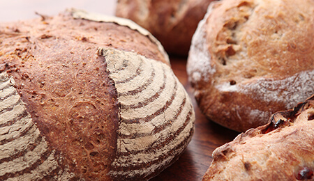
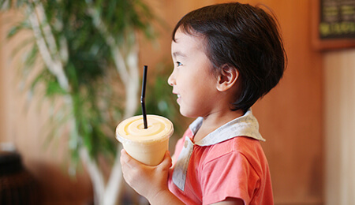
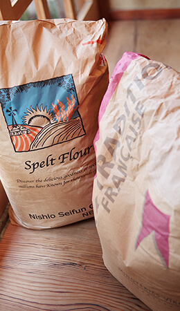
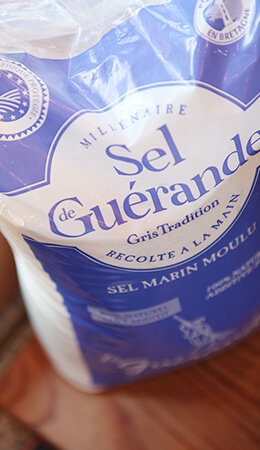

「パン・コンプレ」の原材料は、全粒粉(小麦)、水、天然酵母ゲランドの塩のみです。
一般的に全粒粉をふっくら焼き上げるために使われがちなビタミンＣ等の添加物、イースト、油脂、乳製品等の使用は一切せず、製造工程等に工夫をすることで、穀物のむれた臭みやエグミをおさえ小麦のコクと風味を生かし、ふっくら・しっとりした質感に仕上げました。
フランス産最高級A.O.Pレスキュール発酵バターを100％贅沢に使用した「クワソン・レスキュール・トラディション」は、最高ランクのフランス産小麦粉・ゲランドの塩を使用することで本場の質感を再現した究極のクロワッサンです。パン・オ・ショコラ（ヴァローナチョコ使用）も同じ材料を使用しています。
土・日限定販売のスペルト小麦100%のパン「パン・ドゥ・エポートル」の原材料は、スペルト小麦、水、天然酵母、ゲランドの塩です。スペルト（別名ディンケル、ファッロ、スペルツ）小麦は小麦の原種 （古代穀物）で、ナッツのような独特の風味があり、栄養価に富み、消化が良く、小麦アレルギーが少ないのが特徴です。

安心してより美味しく食べていただくために、パン・菓子の生地、料理、珈琲・紅茶等のドリンク、氷、提供水、スチーム等全てに、フランスの水や倉敷の源水を活性化したものを使用しています。塩素、鉛、トリハロメタン、ＣＡＴ、テトラクロロエチレン、放射能等の有害物質の混入を極限まで減らすことと、異臭を無くすことで素材を生かすために生地や料理はもちろん、氷やスチームにも水道水のままでの使用はしていません。

小麦はフランス産を中心に厳選した最高ランクの欧米産を、ライ麦・スペルト小麦はドイツ産で、加工方法は全粒、石臼挽きや挽き割り、荒挽きや微粉等特殊製粉したものを中心に約30種類の粉を使用しています。
酵母は100%穀物を培養した天然酵母、塩は海水を天日で乾燥させパリュディエ（塩職人）によって採取されたフランス・ブルターニュ地方産のゲランドの塩、バターは乳酸発酵させたフランス産最高級A.O.P発酵バターのイズニーとエシレ、チーズはスイス・イタリア・フランス・オランダ産のナチュラルチーズ、植物油は低温圧縮法で採取されたエキストラバージン有機オリーブオイルと圧搾製法高オレイン酸有機べに花油、高圧圧縮法で採取されたミャンマー産高級製菓用太白ごま油、砂糖は貴重な種子島産の砂糖キビを搾った糖液を一度ろ過して煮詰め、結晶させた甘蔗分蜜糖、ナッツ・フルーツ・野菜・ハーブ・スパイス・シード等は欧米を中心に主要原産国（海外）の優良なものを厳選しています。
その他の原材料は、無農薬無化学肥料の自家農園や中四国・九州地方の材料を中心に使用しています。

また、当初よりイースト（純粋化学培養）、ベーキングパウダー（アルミ含有添加物）、マーガリン・ショートニング（薬品抽出、水素付加）、食塩（イオン交換膜製塩法）は海外では危険性が非常に指摘されている物も多く、工業製品であって食品に混入させてはいけない物との認識を私個人として持っていますので使用していません。
一般的にパンに多用されるイーストフード、品質改良材、 潤滑・離型油 、防腐剤、合成保存料、乳化剤、安定剤等も同様の理由から添加していません。